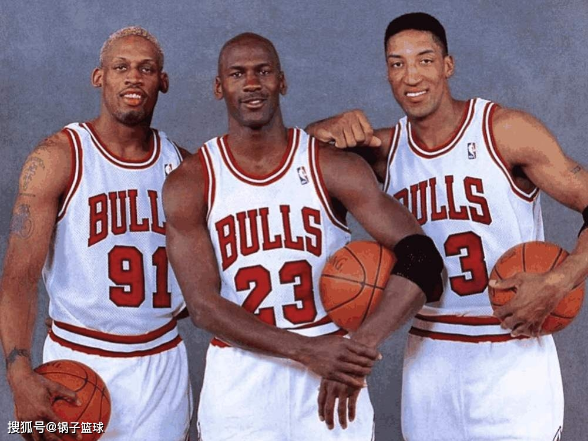
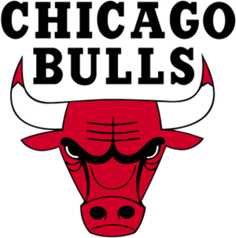
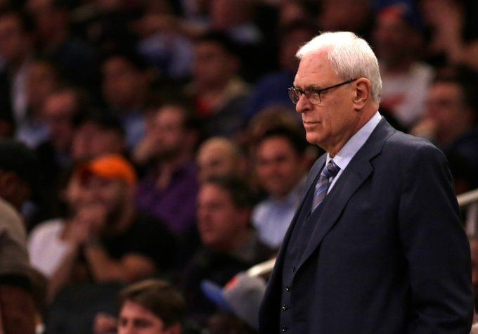
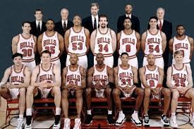
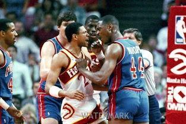

公牛王朝 Chicago Bulls


圖片出自於網路
90年代 公牛隊 (禪師上任)
歷經了80年代的多番嘗試和失敗之後，公牛隊終於蛻變並迎來了屬於自己的時代...


Phil Jackson菲爾·傑克森 1989-1998執教於芝加哥公牛隊，幫助公牛隊拿下6個總冠軍。
1982年，傑克森到美國大陸籃球協會（籃球小聯盟）擔任奧爾巴尼地主的總教練，不但帶領球隊奪得總冠軍，也獲得CBA年度最佳教練獎。
1987年傑克森開始在芝加哥公牛擔任助理教練。1989年接替道格·科林斯出任總教練一職，開始在公牛推行三角戰術，給喬丹拉開空間，並於1990-1991賽季取得61勝21負，更讓球隊取得成立25年來第一個總冠軍。
壞小子軍團(喬丹法則)
又稱“壞小子軍團”，NBA史上最恐怖的“骯髒”球隊...
這套陣容讓底特律活塞隊連續奪得1989、1990年NBA總冠軍，但也讓活塞隊臭名遠揚
喬丹法則（英語：Jordan Rules）是一個籃球戰略，由底特律活塞開始，專門為了防守麥可·喬丹而設計。1988年由查克·戴利、以賽亞·湯瑪斯設計，底特律活塞其他球員執行，喬·杜馬斯及丹尼斯·羅德曼為防守主力。其重點在於「強韌的跟他玩，用肢體去挑戰他，快速改變防守方式，讓他在失去平衡下投球」。在1980年代晚期至1990年代初期，底特律壞孩子軍團用這個方式成功防守了麥可·喬丹，讓芝加哥公牛無法獲得東區冠軍。



公牛vs活塞數據
1990年 公牛隊 vs. 活塞隊 - 得分數據
比賽數據
| 球員 | 球隊 | 得分 |
|---|---|---|
| Michael Jordan | 公牛隊 | 35 |
| Scottie Pippen | 公牛隊 | 18 |
| Isiah Thomas | 活塞隊 | 27 |
| Dennis Rodman | 活塞隊 | 12 |
復仇成功
在教練菲爾·傑克遜將三角戰術帶入芝加哥公牛後，因為球權不再集中在麥可·喬丹身上，麥可·喬丹透過傳球，得到隊友更多的支援。比爾·藍比爾說過:「在喬丹學會團隊合作前，我們一直把他打爆，直到三角進攻進入公牛」 而聯盟也出臺惡意犯規這項新規定，使活塞無法有效防守喬丹，喬丹法則便已失效。